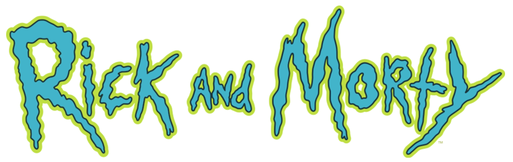

mini wiki

Una wiki dedicada a recopilar toda la información básica sobre la popular serie animada de Adult Swim creada por Justin Roiland y Dan Harmon

"Te voy a decir lo que pienso de las escuelas, Es una pérdida de tiempo La escuela no es un lugar para las personas inteligentes" -Rick

"Escucha, Morty. Lamento decirlo, pero lo que la gente llama 'amor' es sólo una reacción química que motiva a los animales a aparearse. Enfócate en la ciencia" -Rick

"A veces la ciencia es más arte que ciencia, Morty. Mucha gente no lo entiende" -Rick

¡Me he convertido en un pepinillo, Morty! ¡Soy Pickle Riiiick!